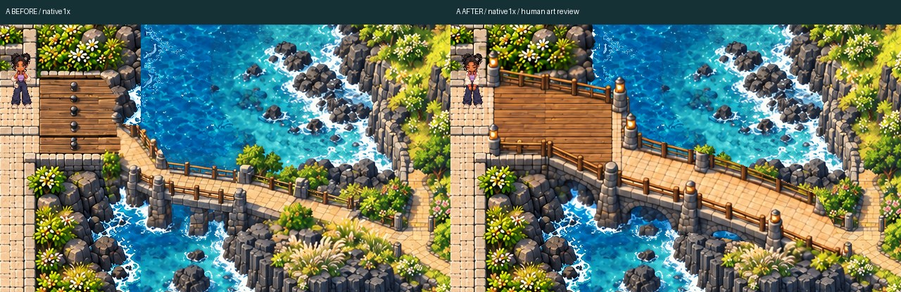
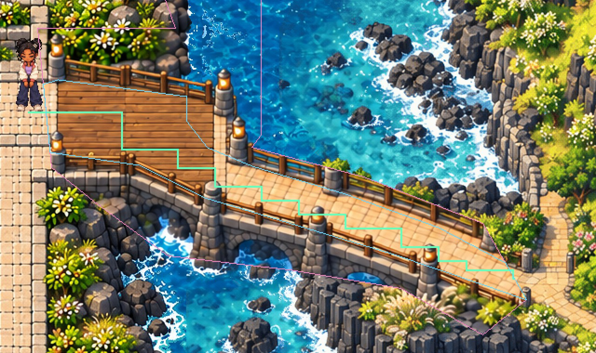
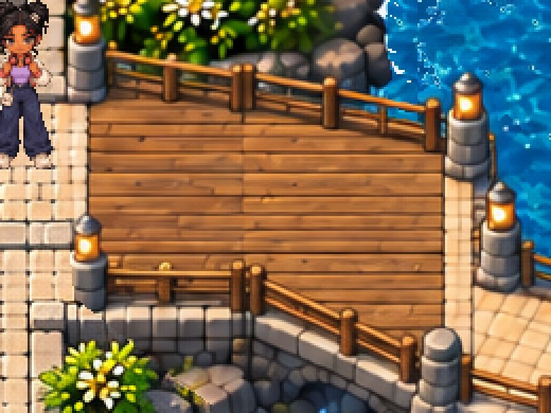
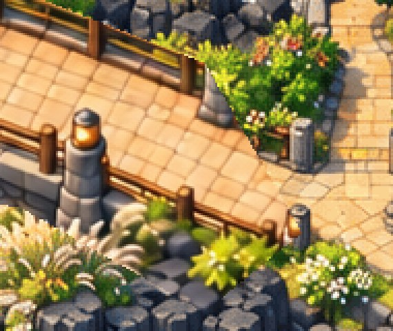
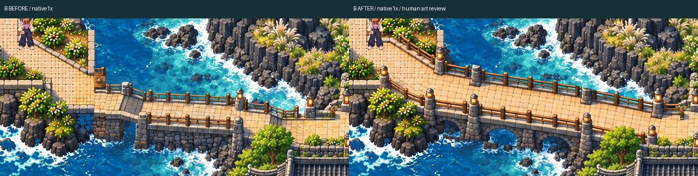
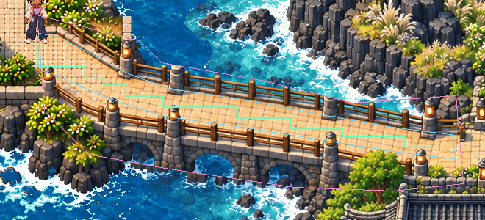
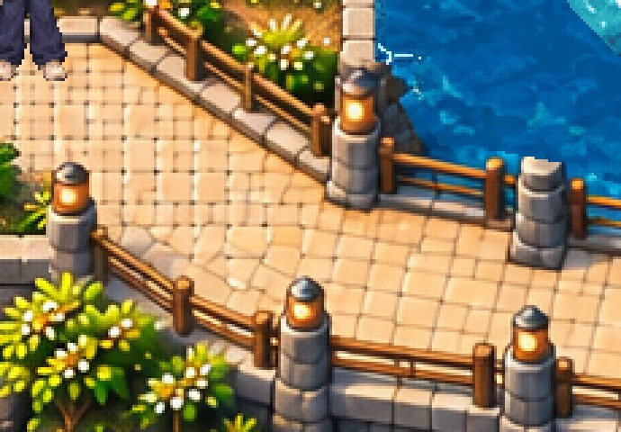
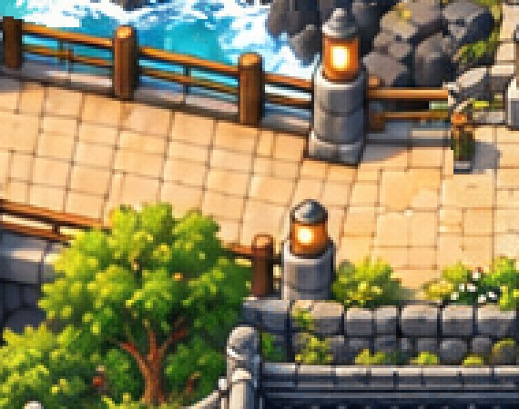

Hanbit APPROVED AND LOCKED. Native Phaser before/after; human bridge artistic approval pending.
Playable ZIP · QA · Physical device handoff

BEFORE native1x · AFTER native1x · Full native frame

Native technical overlay: cyan top plane, green selected corridor, pink edit scope.



BEFORE native1x · AFTER native1x · Full native frame

Native technical overlay: cyan top plane, green selected corridor, pink edit scope.


Two separate bridge review spawns, each followed by four uninterrupted walk-out/return/run-out/return legs. No in-route teleport, speed, pose, clock or collision override. Physical phones NOT TESTED.
Original-size recording · Native contact/body QA
Native current station proof · Protected source/registration hashes